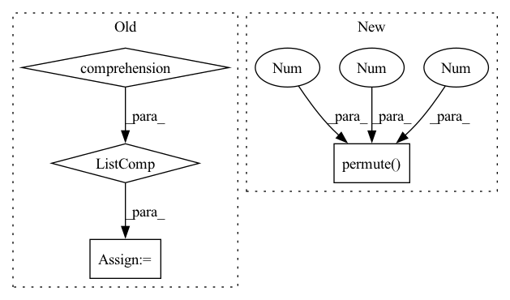

Pattern ID :24098
Before Change
loss = self.cal_loss(outputs, targets, output_lengths, target_lengths)
predicts = self.forward(inputs, input_lengths)
predicts = [self.text_process.int2text(sent) for sent in predicts]
targets = [self.text_process.int2text(sent) for sent in targets]
list_wer = torch.tensor(
[self.cal_wer(i, j).item() for i, j in zip(predicts, targets)]
)
wer = torch.mean(list_wer)After Change
outputs, output_lengths = self(inputs, input_lengths)
loss = self.criterion(
outputs.permute(1 , 0 , 2 ) , targets_ctc, output_lengths, target_lengths
)
self.log("test loss", loss)In pattern: SUPERPATTERN
Frequency: 3
Non-data size: 4
Instances Fragment ID: 74809685
Project Name: manhph2211/vistt
Commit Name: 742be9424d91058a3c3e25adc4db742534fffab3
Time: 2022-08-30
Author: manhph5@vingroup.net
File Name: VASR/local/src/engine/trainer.py
M Class Name: ConformerModule
N Class Name: ConformerModule
M Method Name: validation_step(3)
N Method Name: validation_step(3)
M Parent Class: BaseModel
N Parent Class: pl.LightningModule
M File Name: VASR/local/src/engine/trainer.py
N File Name: VASR/local/src/engine/trainer.py
M Start Line: 72
M End Line: 103
N Start Line: 106
N End Line: 126
Before Change
predicts = self.forward(inputs, input_lengths)
predicts = [self.text_process.int2text(sent) for sent in predicts]
targets = [self.text_process.int2text(sent) for sent in targets]
list_wer = torch.tensor(
[self.cal_wer(i, j).item() for i, j in zip(predicts, targets)]
)
wer = torch.mean(list_wer)
if batch_idx % 100 == 0:
self.log_output(predicts[0], targets[0], wer)After Change
outputs, output_lengths = self(inputs, input_lengths)
loss = self.criterion(
outputs.permute(1 , 0 , 2 ) , targets_ctc, output_lengths, target_lengths
)
self.log("test loss", loss) Fragment ID: 74809687
Project Name: manhph2211/vistt
Commit Name: 742be9424d91058a3c3e25adc4db742534fffab3
Time: 2022-08-30
Author: manhph5@vingroup.net
File Name: VASR/local/src/engine/trainer.py
M Class Name: ConformerModule
N Class Name: ConformerModule
M Method Name: test_step(3)
N Method Name: test_step(3)
M Parent Class: BaseModel
N Parent Class: pl.LightningModule
M File Name: VASR/local/src/engine/trainer.py
N File Name: VASR/local/src/engine/trainer.py
M Start Line: 105
M End Line: 136
N Start Line: 128
N End Line: 148
Before Change
quantiles = self.quantiles
samples = y_pred.size(-1)
quantiles = torch.stack(
[torch.kthvalue(y_pred, int(samples * q), dim=-1)[0] if samples > 1 else y_pred[..., 0] for q in quantiles] ,
dim=-1,
)
return quantilesAfter Change
quantiles = [distribution.icdf(quantile) for quantile in quantiles]
except NotImplementedError: // resort to derive quantiles empirically
samples = torch.sort(self.sample(y_pred, 1000), -1).values
quantiles = torch.quantile(samples, torch.tensor(quantiles), dim=2).permute(1 , 2 , 0 )
return quantiles
class NormalDistributionLoss(DistributionLoss): Fragment ID: 74809654
Project Name: jdb78/pytorch-forecasting
Commit Name: d96465c514b8bf280fae33f0def40fffb62467dd
Time: 2021-04-11
Author: beitner.jan@bcg.com
File Name: pytorch_forecasting/metrics.py
M Class Name: DistributionLoss
N Class Name: DistributionLoss
M Method Name: to_quantiles(3)
N Method Name: to_quantiles(3)
M Parent Class: MultiHorizonMetric
N Parent Class: MultiHorizonMetric
M File Name: pytorch_forecasting/metrics.py
N File Name: pytorch_forecasting/metrics.py
M Start Line: 944
M End Line: 950
N Start Line: 945
N End Line: 953